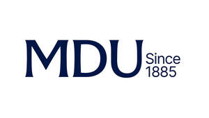

Trade Mark Journal No.2025/027 4 July 2025
UK00004222163 20 June 2025 (9,16,35,36,41,42,44,45)

- Class 9
- Downloadable electronic publications; podcasts; computers, computer hardware and firmware; computer software and software applications, magnetic tapes and disks and instructional manuals (in electronic format); parts and fittings therefore.
- Class 16
- Printed publications, including books, journals, magazines, informational sheets and advice sheets.
- Class 35
- Business risk assessment services; employment counselling and consultancy; career information and advisory services (other than education and training advice); tax planning [accountancy]; tax consultancy [accountancy]; business and professional assistance, advisory services and consultancy with regard to clinical negligence and professional indemnity claims; business and professional risk management; risk management services; business advice related to assessment concerning complaints about professional activities; provision of information and advice relating to all the aforesaid services.
- Class 36
- Financial services; financial planning services relating to taxation; investment services; investment management services; insurance services; insurance brokering; brokering services; underwriting services; reinsurance services; insurance investigations; claims management services; financial risk assessment services; risk management [financial]; risk management consultancy [financial]; assistance, advisory services and consultancy with regard to clinical negligence and professional indemnity claims; tax planning [not accountancy]; taxation consultancy services [not accounting]; discretionary claims benefits; credit brokerage; business and professional management of claims and complaints; assistance, advisory services and consultancy with regard to negligence claims; provision of information and advice services in relation to all the aforesaid services.
- Class 41
- Education; training; teaching; entertainment; sporting and cultural activities; career counselling [education and training advice]; organisation of training; organisation of educational seminars; provision of information and advice relating to all the aforesaid services.
- Class 42
- Scientific and technological services; information technology services for the pharmaceutical and healthcare industries; research and design relating to scientific and technological services; industrial analysis and research services relating to medical and dental practice and the healthcare market; design, development, installation, maintenance and repair of computer firmware and software; computer programming; computer consultancy services; web site design; creating and maintaining web sites; consultancy, assistance and advisory services relating to technology, computer systems, computer peripherals, computer operating systems, and software all in the field of clinical negligence and professional indemnity claims; provision of information and advice relating to all the aforesaid services.
- Class 44
- Information and advisory services in relation to the provision of health and healthcare services (including dental healthcare and pharmacy healthcare services); risk assessment services in relation to the provision of health and healthcare services (including dental services and pharmaceutical services); provision of information and advice services relating to all the aforesaid services.
- Class 45
- Legal services; legal advice and representation; investigation services relating to negligence claims; legal services concerning management of claims and complaints, claims investigation and legal assessment, management and advice concerning complaints about professional activities; providing representation before courts, tribunals, professional bodies, employers and contracting bodies; political lobbying services; consultancy services relating to health and safety; business and professional claims investigation; provision of information and advice relating to all the aforesaid services.
The Medical Defence Union Limited
Representative: Fladgate LLP